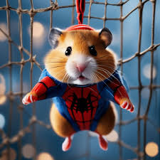
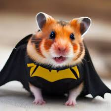
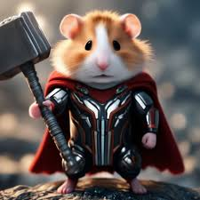

SPIDER ზღვის გოჭი
Spider ზღვის გოჭი ძალიან გამბედავი და სწრაფია. უყვარს ცოცვა და ახალი ადგილების აღმოჩენა. მისი საყვარელი საჭმელია სტაფილო და ვაშლი. ხშირად ამაღლებს განწყობას თავისი ენერგიულობით.
BAT ზღვის გოჭი
Bat ზღვის გოჭი მშვიდი, მაგრამ ჭკვიანია. მას უყვარს სიბნელეში სეირნობა და თავისი პატარა კუთხის დაცვა. ყოველთვის იცავს სხვა გოჭებს და მიყვარს როცა მას ყურადღებას აქცევენ.
THOR ზღვის გოჭი
Thor ზღვის გოჭი ძალითა და სიხარულით სავსეა. უყვარს ბალახზე სირბილი და მეგობრებთან თამაში. მისი წკმუტუნი ყველგან ისმის, როცა დროა საჭმლის. მას ყველაზე მეტად მოსწონს სიმინდის მარცვლები.
ზღვის გოჭები ძალიან მეგობრული, კეთილი და საინტერესო ცხოველები არიან. ისინი ადამიანებს სიხარულს ანიჭებენ და მარტივად უყვარდებათ. მათი მოვლა მარტივია, თუ სიყვარულით მოეპყრობი.